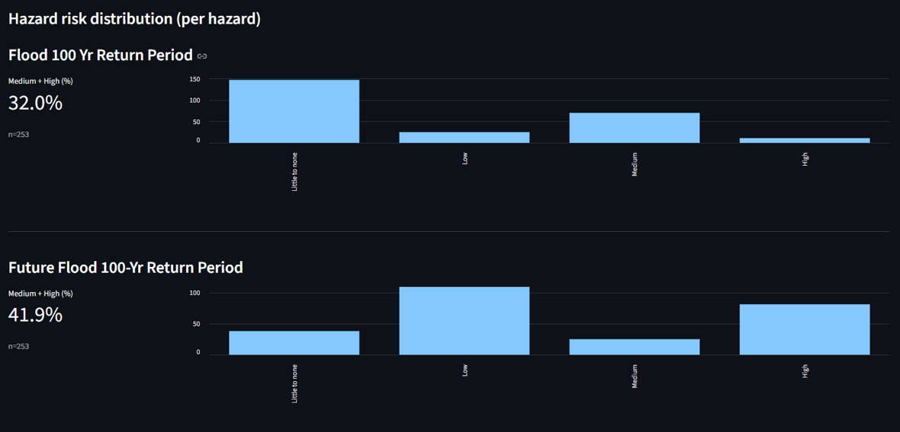

Climate Hazard Exposure Assessment Methodology
Developed a standardized methodology for assessing asset exposure to climate hazards under both current conditions and future projections. The framework integrates local high-resolution datasets with global climate model outputs to enable consistent, scalable analysis across sectors.
Highlights
What the framework is designed to achieve and how it’s structured.
Objective
- Create a repeatable framework for baseline and future hazard exposure assessments.
- Evaluate candidate datasets by resolution, reliability, coverage, and relevance.
- Enable consistent outputs for diverse asset types and sectors.
Method overview
- Hazard selection for multi-hazard coverage (e.g., flood, rainfall extremes, landslide susceptibility).
- Dataset evaluation: local vs global comparison, assumptions review, and coverage checks.
- Exposure extraction: overlay assets with hazard layers and summarize into interpretable metrics.
Tools
- Python (pandas, xarray, geopandas; optional raster tools) for processing and automation.
- QGIS/ArcGIS for QA/QC, review, and cartographic outputs.
- Reporting outputs: maps + tables + charts.
My role
- Designed and standardized the methodology for repeatable delivery.
- Defined dataset selection criteria and documentation structure.
- Supported cross-sector applications with consistent output definitions.
Key takeaways
- Combining local and global datasets improves detail while keeping future-scenario relevance.
- Documented selection criteria supports defensible and consistent assessments.
- Standard outputs enable faster scaling across sectors and geographies.
Dataset evaluation
Compare local and global hazard datasets to select best-fit inputs for resolution, coverage, assumptions, and interpretability.
- Assess resolution, spatial coverage, and temporal representativeness.
- Review assumptions/metadata and known limitations.
- Document selection decisions to ensure defensibility.
Illustrative Dataset Evaluation
Candidate datasets were evaluated based on spatial coverage, temporal scope, resolution, and accessibility to identify the most appropriate inputs for exposure assessment workflows.
| Criteria | Data Source 1 | Data Source 2 | Data Source 3 |
|---|---|---|---|
| Spatial Coverage | Global | Local | Both (Regional + Global) |
| Temporal Scope | Historical baseline | Historical baseline | Historical + Future projections |
| Resolution | Coarse (~10–25 km) | Fine (~5–30 m) | Moderate (~1 km) |
| Accessibility | Open source | Paid / licensed | Open source |
| Typical Use Case | Global risk screening | Local engineering analysis | Climate scenario assessment |
| Strengths | Consistent global coverage | High spatial detail | Future climate projections |
| Limitations | Low spatial resolution | Limited geographic coverage | Moderate spatial resolution |
Exposure extraction
Overlay assets with hazard layers and summarize results into interpretable exposure metrics that are consistent across portfolios.
- Spatial overlays and buffer-based extraction (as relevant).
- Summaries (counts/percentiles/threshold exceedances) designed for decisions.
- Repeatable outputs across asset types and sectors.

Scenario comparison
Compare baseline and future scenarios (e.g., SSP/RCP-aligned pathways) to highlight shifts in hazard intensity and exposure.
- Baseline vs future deltas summarized in a consistent format.
- Scenario framing supports planning and prioritization.
- Charts/tables designed for executive-ready reporting.

Data privacy note
This case study is generalized and should only display public, synthetic, or sanitized examples. No client-confidential information is included.